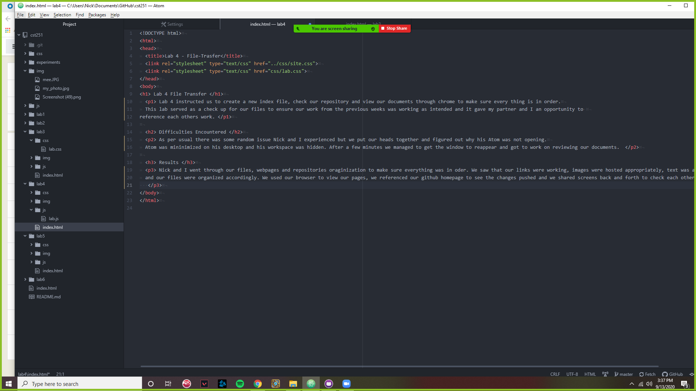
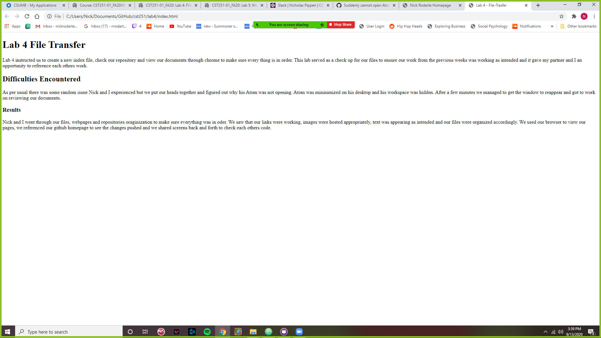

Lab 4 File Transfer
Lab 4 instructed us to create a new index file, check our repository and view our documents through chrome to make sure every thing is in order.
This lab served as a check up for our files to ensure our work from the previous weeks was working as intended and it gave my partner and I an opportunity to
reference each others work.
Difficulties Encountered
As per usual there was some random issue Nick and I experienced but we put our heads together and figured out why his Atom was not opening.
Atom was mininimized on his desktop and his workspace was hidden. After a few minutes we managed to get the window to reappear and got to work on reviewing our documents.
Results
Nick and I went through our files, webpages and repositories oraginization to make sure everything was in oder. We saw that our links were working, images were hosted appropriately, text was appearing as intended
and our files were organized accordingly. We used our browser to view our pages, we referenced our github homepage to see the changes pushed and we shared screens back and forth to check each others code.

